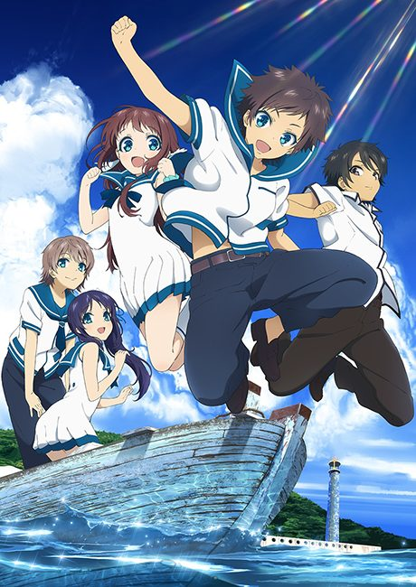
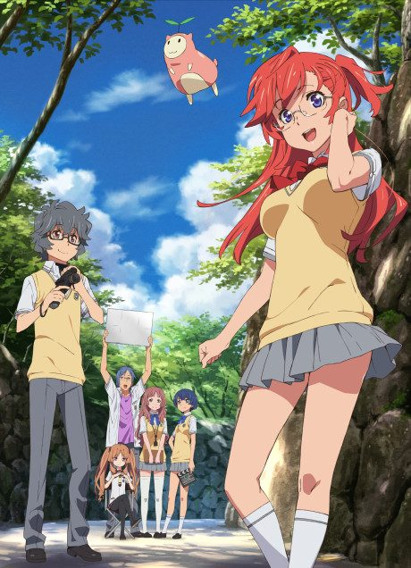
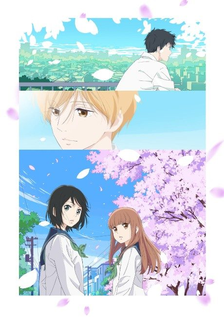
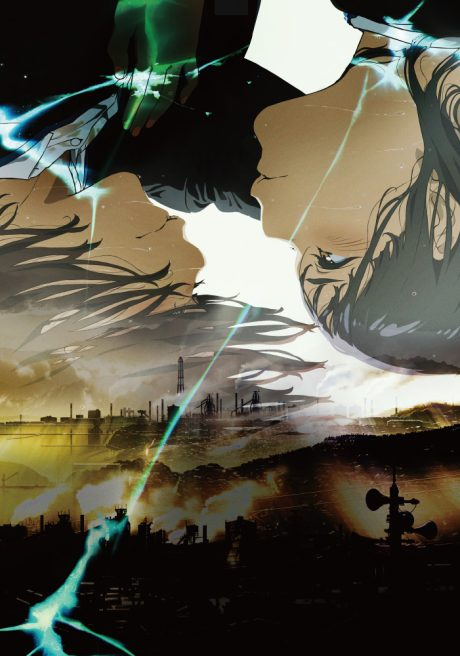
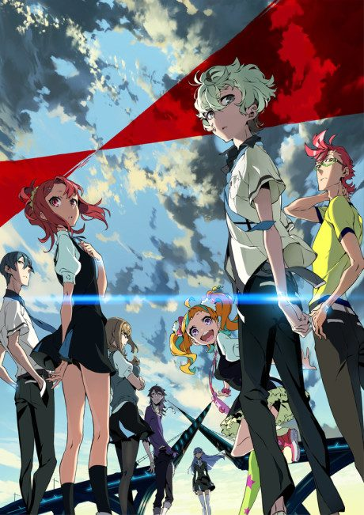

A Lull in the Sea
凪のあすから
Four kids from a village under the sea start attending school on land, where rivalries, crushes and old tensions between the two peoples come to the surface.
An original anime, so there's no book to continue with.
7.6AniList score
—Animeter, no votes yet
26episodes
Rate it or report where you stopped
Is there a manga to continue?
StatusOriginal
An anime original, so there is no manga to pick up from.
Sources: AniList, MyAnimeList
More like A Lull in the Sea

Original7.1 Film7.5
Film7.5

Film7.1
Film7.2
Manga Vol. 77.8
The Pet Girl of Sakurasou VN7.7
VN7.7
 Manga Vol. 57.5
Manga Vol. 57.5
 Manga Ch. 827.4
Manga Ch. 827.4
 Done7.8
Done7.8

Original7.1 Unclear8.3
Unclear8.3
Unclear7.0
Higehiro: After Being Rejected, I Shaved and Took in a High School Runaway